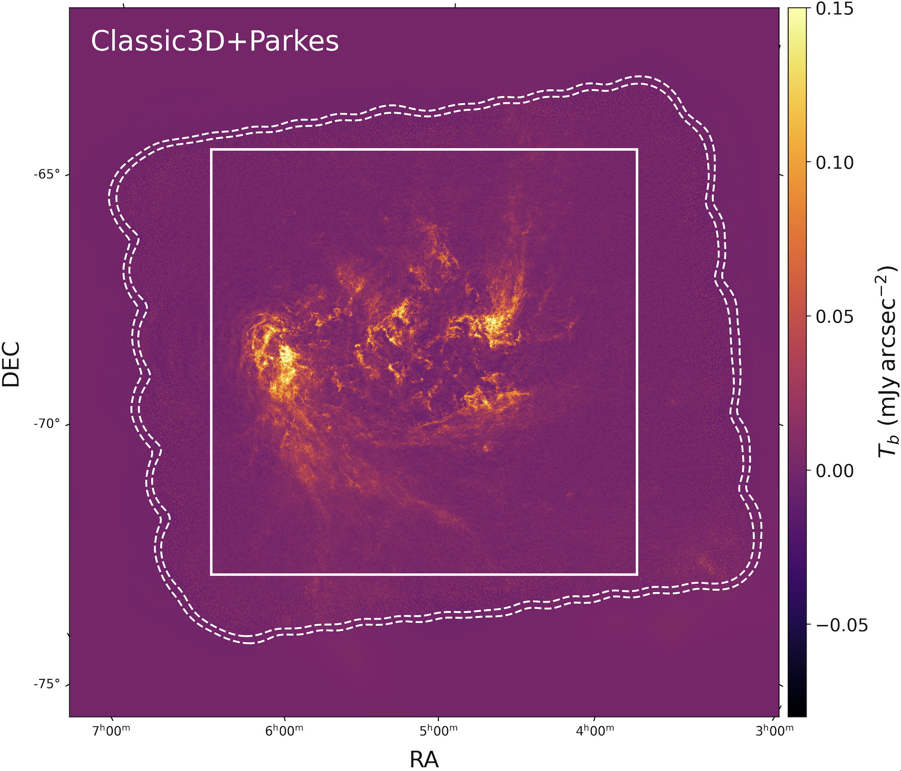
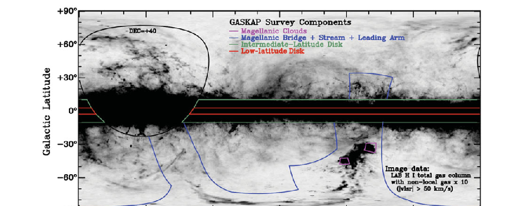

Publications

Marchal et al. 2026 in prep.IViS: Interferometric Visibility-domain Inversion Software
 Dempsey et al. 2026
Dempsey et al. 2026Cold skeleton of the Magellanic Clouds with ASKAP
 Park et al. 2026
Park et al. 2026High-resolution CNM around 30 Doradus
 Lee et al. 2025
Lee et al. 2025H I turbulence in the SMC
 Nguyen et al. 2025
Nguyen et al. 2025GASKAP and GALAH probes of cold ISM
 Chen et al. 2025
Chen et al. 2025Cold gas in the Magellanic outskirts
 Kemp et al. 2025
Kemp et al. 2025Processing GASKAP-HI pilot data
 Lynn et al. 2025
Lynn et al. 2025Stacking absorption spectra in cirrus H I
 Buckland-Willis et al. 2025
Buckland-Willis et al. 2025Multi-phase H I clouds in the SMC halo
 Nguyen et al. 2024
Nguyen et al. 2024Local H I absorption toward the Magellanic foreground
 Murray et al. 2024
Murray et al. 2024A Galactic eclipse in the SMC
 Gerrard et al. 2023
Gerrard et al. 2023Spatially resolving turbulence-driving mixture in the SMC
 Ma et al. 2023
Ma et al. 2023H I filaments and magnetic fields in the SMC
 Dempsey et al. 2022
Dempsey et al. 2022Unbiased view of cold gas in the SMC
 Dickey et al. 2022
Dickey et al. 2022GASKAP pilot Galactic 21 cm absorption
 Pingel et al. 2022
Pingel et al. 2022ASKAP H I emission in the SMC

Dickey et al. 2013GASKAP: The Galactic ASKAP Survey